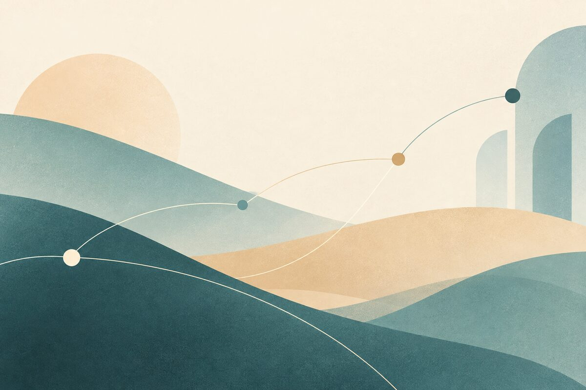

At a glance
- Focus
- Business development, PR, startup content and UGC
- Currently
- Content Creator & Marketing Intern at GoWondaa
- Education
- Bachelor of Business Information Systems, 2026
- Languages
- Arabic native, English intermediate
Experience
Content Creator & Marketing Intern
GoWondaa · Sep 2026 – Present · Remote, for a UK-based AI no-code website builder
- Supports GoWondaa's market expansion into Egypt with content aligned to the company's positioning, audience and marketing objectives.
- Built the content strategy and publishing plan from the ground up: pillars, topics, formats and creative direction.
- Turns marketing ideas into social posts, video scripts, carousels and filmed video content, from strategy to execution.
- Creates audience-focused content that builds brand awareness, engagement and product interest in a consistent brand voice.
Business Development, Public Relations & Content Creator
Modonty · 2026 · Egypt, including Techne Summit 2026
- Developed 15 real business collaboration opportunities through outreach, relationship building and partnership exploration.
- Reached and communicated with 21 Techne Summit speakers, managing outreach, follow-ups and interview and content opportunities.
- Represented Modonty with businesses, speakers, partners and event stakeholders, connecting business development with PR and content.
Business Development & Operations Coordinator
iGCC · 2024 – Present · Alexandria, Egypt
- Supports daily business operations, administration, and client, partner and stakeholder communication.
- Assists in developing marketing initiatives and partnership opportunities.
- Maintains operational documentation, workflow tracking and business coordination.
- Contributes to business growth initiatives and organizational visibility.
Marketing & Project Coordinator
Orange Corners Egypt Startup Incubation Program · 2023 – Present · Alexandria, Egypt
- Coordinates startup development activities and supports project planning, task management and execution.
- Assists in preparing business presentations and investor-facing materials.
- Represents project teams during stakeholder and partner engagements.
Earlier roles
Workshop Facilitator & Training Coordinator
Charity Foundation · 2023
Designed and facilitated educational workshops on entrepreneurship and marketing; developed training materials and coordinated participant engagement.
Accounting & Administrative Assistant
Private accounting, loans & supply offices · 2022 – 2024
Supported bookkeeping, financial documentation, client records, procurement documentation and administrative operations.
What I bring
Business development
Partnerships, outreach, lead generation, relationship building and event representation.
Public relations
Media and speaker relations, stakeholder and client communication.
Content & UGC
Strategy, copywriting, social media, video scripts, carousels, production and brand voice.
Coordination
Project coordination, presentations, public speaking and team collaboration.
Tools
Microsoft Excel, Word and PowerPoint, digital collaboration tools, basic programming.
Education
Bachelor of Business Information Systems (BIS)
High Institute King Marriott · Alexandria · 2026
Relevant areas: management, information technology, business analytics, programming fundamentals, database concepts, marketing and entrepreneurship.

The artwork is illustrative, not a photo.